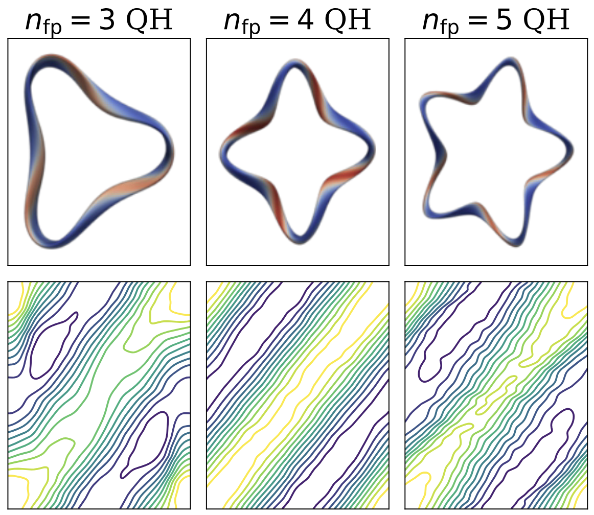
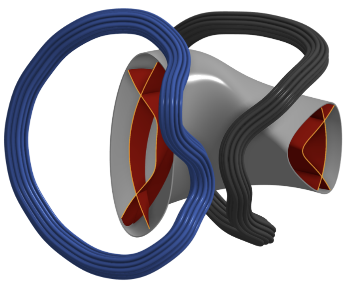
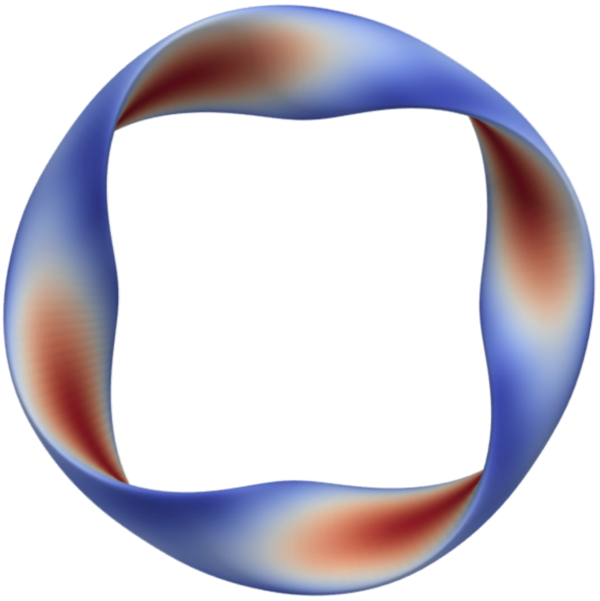
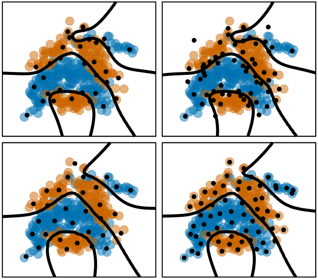
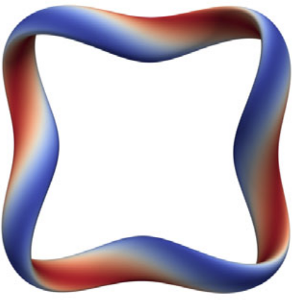
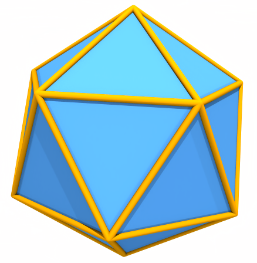
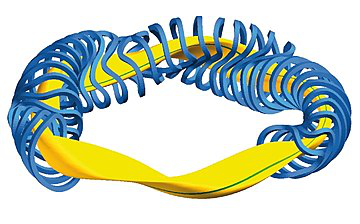
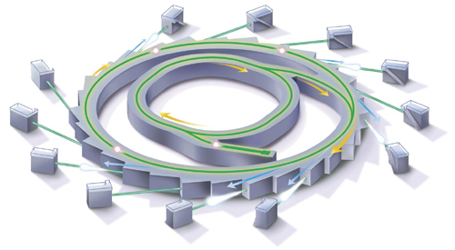
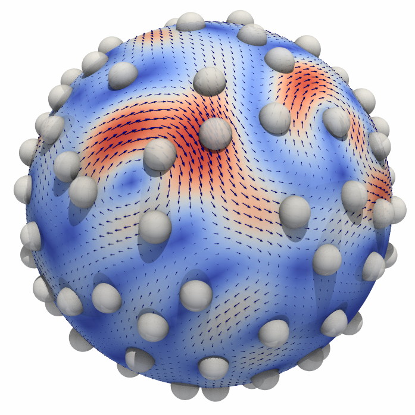

Diffusion For Fusion
Designing Stellarators with Generative AI
Stellarators are a prospective class of fusion-based power plants that confine a hot plasma with three-dimensional magnetic fields. We show that stellarators can be designed using Denoising Diffusion models, a class of generative models commonly used for image generation.
Appears In NeurIPS AI4Science Workshop, 2025 ›
STAR_Lite
A Laboratory-Scale Stellarator for Fusion Energy at Hampton University
We introduce the STAR_Lite Stellarator, a laboratory-scale device for studying non-resonant divertors. STAR_Lite is under construction at Hampton University.
Submitted to Journal of Plasma Physics ›
Fast Ion Confinement
Direct Optimization of Fast-Ion Confinement in Stellarators
Keeping fast ions confined inside a stellarator is essential for producing fusion energy, but simulating their trajectories is expensive. We directly optimize stellarator designs by simulating the actual fast ion trajectories, and show that this approach successfully produces configurations with significantly fewer ion losses.
Appears in Journal of Plasma Physics ›
Variational Inference
Scaling Gaussian Processes with Derivatives
Augmenting Gaussian Processes (GP) with derivative information can significantly enhance their predictive capacity. However, there are serious scalability issues associated with training and inference when using GPs with derivatives, particularly in high dimensions. We developed a Variational Inference technique for training GPs with derivatives that learns a reduced GP model, allowing for scalable training and inference at a minimal loss in accuracy.
Appears In NeurIPS 2021 ›
Multiobjective Optimization
Understanding trade-offs in stellarator design
Every stellarator design involves trade-offs: better particle confinement might require complex coils, while cutting costs can hurt energy production. Understanding these trade-offs is key to building devices that satisfy physical, engineering, and financial requirements all at once. We apply multi-objective optimization to map out these trade-offs and reveal how fundamental design choices influence the overall design.
Appears In Journal of Plasma Physics›
Constrained Optimization
Modeling Approaches for Addressing Simple Unrelaxable Constraints with Unconstrained Optimization Methods
When optimizing chemical concentrations in a chemical system or probabilities of transmission in an epidemiological simulation, negative concentration levels and negative probabilities, respectively, are readily modeled as belonging to regions that an optimization algorithm should never probe. These constraints are known as unrelaxable constraints, constraints which must be satisfied in order to produce meaningful output of the objective. Solving optimization problems with unrelaxable constraints is difficult, and traditionally requires specialized algorithmic solutions. We have developed modeling approaches which open the doors to "off-the-shelf" optimization routines, such as BFGS, to solve optimization problems with simple unrelaxable constraints.
Accepted to Optimization Letters ›
Fusion Energy
Stochastic Optimization of Stellarator Coil Designs
The Stellarator is a state-of-the-art nuclear fusion device designed to generate sustainable energy. We are developing a stochastic optimization framework within FOCUS, an optimization toolbox for designing the magnetic coils for Stellarators. Our accelerated stochastic optimization methods allow for rapid development of coils with low construction tolerances, with the goal of saving millions of dollars in engineering costs.
Appears In The Journal of Plasma Physics ›
Particle Accelerators
Derivative-Free Optimization of a Rapid-Cycling Synchrotron
Fermilab houses a proton accelerator to be used as a part of Deep Underground Neutrino Experiment (DUNE), an international, multi-decadal physics program for leading-edge neutrino science and proton decay studies. However by the inception of DUNE in 2032, the FermiLab proton complex must undergo a substantial upgrade in order to meet the particle accelerator beam power requirements. We develop and solv a derivative-free optimization model which seeks these high power accelerator configurations.
Appears In Optimization and Engineering ›
Microstructures
Fluctuating Hydrodynamics Methods for the Drift-Diffusion Dynamics of Microstructures
The goal of this project was to study the Drift-Diffusion Dynamics of Microstructures embedded in spherical fluid interfaces. In nature we find that this is a good model for the interaction of proteins in the lipid-bilayer membrane (cell membrane). Throughout the project we developed fluctuating hydrodynamics approaches for capturing the fluid and microstructure interactions. We then used our model to study how the drift-diffusion dynamics of microstructures compare with and without hydrodynamic coupling within the curved fluid interface.
Appears In The Journal of Computational Physics ›